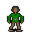

Polyphem¶{ .sprite }
| Monster ID | polyphem_bed |
| Type | NPC |
| Class | Humanoid |
| HP | 1 |
| Found in | ll2_cyclops_cave |
| Introduced | v0.8.18 |
Combat stats¶
| Stat | Value |
|---|---|
| HP | 1 |
| Damage | 0 |
| Attack chance | 0 |
| Block chance | 0 |
| Damage resistance | 0 |
| Max AP | 10 |
| Attack cost | 10 AP |
| Attacks per turn | 1 |
| Move cost | 10 AP |
| Critical skill | 0 |
| Critical multiplier | – |
| Crit chance | none (needs critical skill and a multiplier) |
XP formula (from the game's loader): ⌈(attacks per turn × attack chance × average damage × (1 + critical skill × multiplier) × 3 + HP × (1 + block chance) + 9 × damage resistance) × 0.7⌉, +50 if its hits inflict a condition. More Exp adds a percentage on top.
Verified against v0.8.18 monster data and game code (`MonsterTypeParser.java`).
Locations¶
| Map | Region | Up to | Notes |
|---|---|---|---|
| ll2_cyclops_cave | – | 1 | appears later in a quest |
Quests¶
- A map of the Great Lake Laeroth: stages 52, 54, 56, 57
Dialogue simulator¶
Set up your situation (quest stages, items, kills…), then talk to Polyphem. The simulator follows the game's own rules: it takes the same silent checks, offers only the options you'd really see, and applies their effects (quest stages, items handed over, rewards) as you go.
Rules verified against v0.8.18 game code (ConversationController.java) and dialogue data.
Dialogue (56 lines)
What the dialogue says, exactly as in the game files. Lines are listed once; links jump to the line a choice leads to.
polyphem (silent check: the first matching branch below is taken)
- branch 1 (if reached stage 57 of A map of the Great Lake Laeroth) → polyphem_57
- branch 2 (if reached stage 56 of A map of the Great Lake Laeroth) → polyphem_105
- branch 3 (if reached stage 55 of A map of the Great Lake Laeroth) → polyphem_55
- branch 4 (if reached stage 54 of A map of the Great Lake Laeroth) → polyphem_54
- branch 5 (if reached stage 52 of A map of the Great Lake Laeroth) → polyphem_52
- branch 6 → polyphem_10
polyphem_57 Polyphem: “It's a good thing sheep are so easy to distinguish from humans.”
- “Baaah.” (if NOT reached stage 58 of A map of the Great Lake Laeroth) → polyphem_57_10
- “Baaah.” (if reached stage 58 of A map of the Great Lake Laeroth) → polyphem_58
polyphem_105 Polyphem: “[angry] YOU! Little one! WHERE ARE YOU?!”
- Next → polyphem_106
polyphem_55 Polyphem: “Hmmm? [Polyphem opens his eye for a brief moment, but long enough for you.]”
- “You pour the harsh soapy water directly into Polyphem's eye.” → polyphem_100
polyphem_54 Polyphem: “Hmmm? [Polyphem opens his eye for a brief moment.]”
polyphem_52 Polyphem: “Without another word, Polyphem falls onto his bed and immediately begins to snore loudly.” — effects: removes monsters from ll2_cyclops_cave, spawns monsters on ll2_cyclops_cave, sets stage 54 of A map of the Great Lake Laeroth
polyphem_10 Polyphem: “Ah. Good. Nice. Home.”
- Next → polyphem_11
polyphem_57_10 Polyphem: “HA! Are you trying to sneak your way through here acting like a sheep?!”
- “Does it really catch the eye?” → conversation ends
polyphem_58 Polyphem: “My favorite sheep! Your bleating sounds a bit unusual today. But I recognize you among hundreds by your wool.”
- Next → polyphem_58_10
polyphem_106 Polyphem: “Calm down. Stay calm.”
- Next → polyphem_107
polyphem_100 Polyphem: “AAAAH - MY EYE!” — effects: sets stage 56 of A map of the Great Lake Laeroth
- Next → polyphem_101
polyphem_11 Polyphem: “[sniffs] Hm. The cave smells... strange today.”
- Next → polyphem_12
polyphem_58_10 Polyphem: “Hop, hop, run outside and enjoy the delicious grass.”
polyphem_107 Polyphem: “I'll see you again in a minute.”
- Next → polyphem_108
polyphem_101 Polyphem: “MY GOOD EYE!”
- Next → polyphem_102
polyphem_12 Polyphem: “Oh, a guest! How unusual.”
- Next → polyphem_13
polyphem_108 Polyphem: “I CAN'T SEE ANYTHING ANYMORE!”
- Next → polyphem_109
polyphem_102 Polyphem: “[staggers backward, flailing blindly] That burns!”
- Next → polyphem_103
polyphem_13 Polyphem: “Don't be alarmed. I'm not alarmed by myself either.”
- Next → polyphem_14
polyphem_109 Polyphem: “[yells outside] BROTHERS! HELP!”
- Next → polyphem_110
polyphem_103 Polyphem: “That's cheating!”
- Next → polyphem_105
polyphem_14 Polyphem: “[looking in the mirror] I just look dangerous.”
- Next → polyphem_15
polyphem_110 Polyphem: “[bangs against the cave wall] HELP! I'VE BEEN BLINDED!”
- Next → polyphem_111
polyphem_15 Polyphem: “[to the sheep] Quiet now. The visitor is looking.”
- Next → polyphem_16
polyphem_111 Aphem: “[voices from outside, muffled, bored] What's wrong, Polyphem?”
- Next → polyphem_112
polyphem_16 Polyphem: “You're in luck, little one. It's not a holiday today.”
- Next → polyphem_17
polyphem_112 Polyphem: “NOBODY! NOBODY BLINDED ME!”
- Next → polyphem_113
polyphem_17 Polyphem: “[grins proudly] But it will be soon.”
- Next → polyphem_18
polyphem_113 Dummy NPC: “A stunned pause outside.”
- Next → polyphem_114
polyphem_18 Polyphem: “The door is locked. You can't leave now. Don't be angry. Rules are rules.”
- Next → polyphem_18a
polyphem_114 Aphem: “... What?”
- Next → polyphem_115
polyphem_18a Polyphem: “This door has no key. Keys always get lost... It only opens when I look in this mirror. Clever, clever - just like me.”
- “So I can't just kill you to get out again.” → polyphem_19a
- “Are you a cyclops?” → polyphem_19a
polyphem_115 Polyasem: “If nobody blinded you, why are you screaming?”
- Next → polyphem_116
polyphem_19a Polyphem: “What? How you dare? Me the mightiest of all cyclops! Me Polyphem!”
- Next → polyphem_19b
polyphem_116 Polyphem: “BECAUSE IT HURTS!”
- Next → polyphem_117
polyphem_19b Polyphem: “[beats his chest] My relatives will be coming for the next feast.”
- Next → polyphem_20
polyphem_117 Polyphem: “[desperately] NOBODY WAS DOING IT!”
- Next → polyphem_118
polyphem_20 Polyphem: “My hungry brothers.”
- Next → polyphem_21
polyphem_118 Polyphem: “HE'S STANDING HERE! OR WAS STANDING! NOT ANYMORE!”
- Next → polyphem_119
polyphem_21 Polyphem: “[leans toward the player] And I'll bring the main course.”
- Next → polyphem_23
polyphem_119 Aphem: “Then cool your eye.”
- Next → polyphem_120
polyphem_23 Polyphem: “[straightens up, smugly] You can stay until then. The sheep are nice. They don't talk much.”
- Next → polyphem_24
polyphem_120 Polyasem: “And stop drinking.”
- Next → polyphem_121
polyphem_24 Polyphem: “You should take a leaf out of their book.”
- Next → polyphem_25
polyphem_121 Dummy NPC: “Laughter outside, footsteps receding.”
- Next → polyphem_122
polyphem_25 Polyphem: “[turns to the mirror, straightens up] Me too, by the way. Nice, I mean. Very nice, in fact.”
- Next → polyphem_26
polyphem_122 Polyphem: “COME BACK!”
- Next → polyphem_123
polyphem_26 Polyphem: “They say I have an eye for guests.”
- Next → polyphem_30
polyphem_123 Polyphem: “HE'S DANGEROUS!”
- Next → polyphem_124
polyphem_30 Polyphem: “Who are you, anyway?”
- “My name is Nobody.” → polyphem_31
polyphem_124 Polyphem: “[quieter, offended] Very dangerous indeed. But nothing against me, Polyphem!”
- Next → polyphem_125
polyphem_31 Polyphem: “Nobody, huh? But that's not important. I just need to know what to call the dish.” — effects: sets stage 52 of A map of the Great Lake Laeroth
polyphem_125 Polyphem: “Coward! Invisible coward!”
- Next → polyphem_127
polyphem_127 Polyphem: “[sniffs] I can still smell you.”
- Next → polyphem_128
polyphem_128 Polyphem: “Never mind. You're not getting out of here.”
- Next → polyphem_129
polyphem_129 Polyphem: “I'll let the sheep out, then I'll find you more easily.” — effects: removes monsters from ll2_cyclops_cave, spawns monsters on ll2_cyclops_cave, sets stage 57 of A map of the Great Lake Laeroth, clears stage 110 of Lake Laeroth nondisplay (hidden flag), changes map ll2_cyclops_cave, spawns monsters on mountainlake27, spawns monsters on mountainlake27, changes map mountainlake27
Version history¶
| Version | Change |
|---|---|
| v0.8.18 | Added Dialogue: 56 lines added |
Verified against v0.8.18 and every earlier release back to v0.7.0 (game data compared release by release).
Community notes¶
Written by players, not generated from game data. Observations: what players notice in-game · Lore: the in-world story · Trivia: real-world facts, references, development history · Theory / speculation: unconfirmed ideas; may just be unfinished content
Observations¶
Nothing here yet. Know something? Add it.
Lore¶
Nothing here yet. Know something? Add it.
Trivia¶
Nothing here yet. Know something? Add it.
Theory / speculation¶
Nothing here yet. Know something? Add it.
Technical information
| Monster ID | polyphem_bed |
| Spawn group | polyphem_bed |
| Loot table | – |
| Conversation | polyphem |
| Faction | – |
| Movement | – |
| Icon | monsters_ld1:36 |
| Defined in | res/raw/monsterlist_lake_laeroth_2.json |
Raw data:
{
"id": "polyphem_bed",
"name": "Polyphem",
"iconID": "monsters_ld1:36",
"monsterClass": "humanoid",
"spawnGroup": "polyphem_bed",
"phraseID": "polyphem"
}
Data from v0.8.18